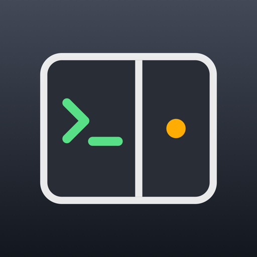

强烈建议配合豆包输入法使用：手机上装好豆包输入法，按住说话就能输入。给 AI 下指令、改文字、敲命令，一切都能用嘴说，不用一个字一个字打。
两边都要装：客户端装在手机上，服务端（Pane 助手）装在要被遥控的电脑上。手机和电脑连在同一个 WireGuard 网里。
这是 Ad Hoc 包，只能装在开发者后台登记过的 iPhone 上；换了新手机要先登记设备再重新打包。 描述文件一年过期，过期后重新打包安装即可。以后 App 里会提示更新，覆盖安装，配对和首页窗口都还在。
手机要开着 WireGuard。安卓版没有推送（Mac 助手只会发 iPhone 的推送），其他和 iPhone 一样。 以后 App 里会提示更新，下载新的安装包覆盖安装，配对和首页窗口都还在。
手机上只能看到下表“终端”这一列里开着的窗格，别的终端看不到。“测过的”是我们实际用过的环境，别的版本大概率也行，但没测过。
| 电脑 | 终端 | 要先装好 | Codex |
|---|---|---|---|
| Mac | iTerm2 测过：iTerm2 系统自带的“终端”、Warp 等不支持 |
iTerm2，打开它的 Python 接口 | 不用设置 |
| Windows | WSL 里的 tmux 测过：WSL + Ubuntu 24.04 + tmux 3.4 |
WSL，WSL 里装 tmux | 要设置（见下） |
| Linux | tmux 测过：Ubuntu 24.04 + tmux 3.4 |
tmux | 要设置（见下） |
不用设置，手机上往上拖就能翻它的历史。
测过：Mac 的 iTerm2 Windows、Linux 的 tmux 里按道理一样，还没用真的 Claude 测过。
Codex 在 tmux 里默认用“全屏”模式，对话不留在终端历史里，手机上往上翻不了。在那台电脑上（Windows 是在 WSL 里）的
~/.codex/config.toml 加上这两行：
[tui]
alternate_screen = "never"改完退出 Codex 再打开，用 codex resume --last 能接着原来的对话。Mac 的 iTerm2 里不用改。
Mac、Windows 上的普通窗口手机上能看、能点；Linux 没有（服务器没有桌面）。
Mac、Windows 有，Linux 没有。在手机的开关页里自己挑几个程序：Mac 上是「应用程序」里的 App（一开始先放好了 iTerm2）； Windows 上是开始菜单「所有应用」里的程序，应用商店装的（记事本、终端）也行。电脑上 iTerm2 没开时，手机上先在这里把它打开。
新手机第一次连时，电脑上会弹「允许」；人不在电脑前，就在手机上输配对口令放行。三种助手默认都是 123456，装好先改掉： Mac 在菜单栏图标里「配对口令…」，Windows 在托盘菜单里「配对口令…」，Linux 在管理页里。
xattr -dr com.apple.quarantine /Applications/PaneMac.app && open /Applications/PaneMac.app或者先双击打开一次，被拦后去「系统设置 → 隐私与安全性」点「仍要打开」。
| iTerm2 的 Python 接口 | 终端要开在 iTerm2 里。iTerm2 → 设置 → General → Magic → 勾上 Enable Python API。 已经勾着但还连不上时，取消再重新勾一次。 |
| Python | 不用单独装：助手会自动用 iTerm2 自带的，或者用这台 Mac 上的 Python 3 建一个（第一次要联网）。 |
| 控制 iTerm2 | 第一次会弹「PaneMac 想要控制 iTerm」，点允许。不点的话看不到终端。 |
| 屏幕录制 | 看 Chrome 等普通窗口要用。 |
| 辅助功能 | 在手机上点、滑普通窗口要用。 |
| 开机自动打开 | 不用设，助手自己会登记。要是系统让你批准，菜单里会提示去「系统设置 → 通用 → 登录项」打开。 |
推送（可选）：Claude Code 做完、等你回复时推到手机，要在菜单栏图标里「推送：选择密钥文件…」装一个 APNs 密钥（.p8），每台 Mac 各装一次。
以后不用再来这一页：助手自己查新版，菜单里点更新到新版就自动替换，权限都还在。
wsl --install，按提示重启。助手会自己在 WSL 里装好终端部分，
先装 exe 还是先装 WSL 都行（WSL 装好后半分钟内自己接上）sudo apt install tmuxtmux new -A -s main。
也可以在手机「电脑上正在运行」里点新开一个窗口，桌面上会开一个接着 tmux 的终端用 Codex 的话，先照上面“先看这里”改一下它的设置。有新版时托盘菜单里会出现“更新到新版”。
ARM 的机器下载 arm64 版。
sudo apt install tmux），终端开在 tmux 里：tmux new -A -s mainchmod +x pane-helper-linux-* && ./pane-helper-linux-* install装在有公网 IP 的服务器上要注意：7788（手机连）和 7789（管理页）在所有网卡上监听，公网也能访问，管理页还是明文 http。 在防火墙里只放行 WireGuard 网段，并先改掉默认口令。
用 Codex 的话，先照上面“先看这里”改一下它的设置。 有 systemd 的话自动装成开机服务。只能看 tmux 里的窗格，没有普通窗口画面。
更新于 2026-09-30 09:40
安装包托管在 GitHub Releases